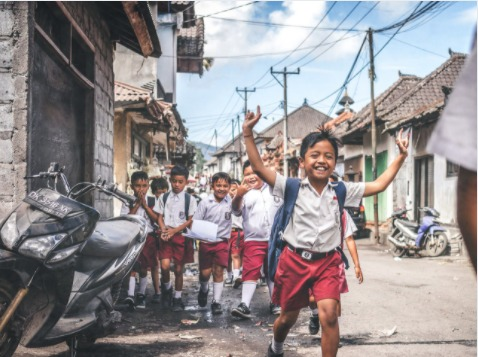

Youth India Foundation, is a social
entrepreneurship platform where youth from all
over the nation unite to gather their knowledge
and skills for a good cause. It is a place where we
aim to bring out the true and great potential
hiding underneath the youth of India. It’s a place
where we endeavor to meet our expectations of
an “Incredible India”.

We make a living from what we get, but we make a life from what
we give
Your Friend
A platform where people
of can evocate for help.
E-School
An e-school that will serve
the purpose of distance
learning
E-Commerce
The e-commerce platform meant to promote the sale of home-
made artisanal, utilitarian and consumable products.
State Teams
West Bengal
Odhisha
Delhi
Maha- rashtra
Tamil Nadu
Others
OUR OUTREACH CAMPAIGN
“Its not about saying the right things, its about doing
the right things at the right time.” With this ideology in
mind Youth Outreach programme is all set to organise
a flood relief drive to assist the victims of Dharmasala
Block of Jajpur District. The flood has affected the lives
of around 4 lakh innocent people living in Jajpur,
destroying farms, roads and the overall livelihood.
This outreach programme is being funded by the
events organised by Youth Odisha and the contribution
of those who extended their support. The aim is to
reach out to maximum number of people and provide
relief in the form of food, clothes or anything that they
require so that these affected people can start their lives afresh."
Do you think it is unworthy or a waste of time for
entrepreneurs to take up on some philanthropic work?
Youth India Foundation is here to change your mind
about that! We want to create "social entrepreneurs" who
utilize technologies and innovations to solve social issues
because, after all, it is the same community that we ALL
live in and helping out people around us would uplift our
whole community as a whole! YIF wants to create
awareness among aspiring entrepreneurs that being a
social entrepreneur doesn't require you to shift your
focus from building a brand to absolute charity or nonprofitable work.
MEET OUR FOUNDER
"True success is not acing all your exams, working at the top notch companies,
earnings millions of money but becoming a humble human who uses his power to
bring smiles on the faces of the needy and one who contributes towards the
making of a better society. I have always been actively participating in various
activities apart from academics that taught me a great deal of skills and values that
helped me achieve what I've achieved today, founding Youth India Foundation. My
journey started from my school, Sai International where I got many opportunities
like being the Cultural Secretary (Secondary) in the student council, being a
member of the international press MUN, successfully planning and directing out
school's biggest science fair SAITED working as the Finance Director and
organising multiple events with mass footfall like Sai Abhinandan, MUN, Sai
confluence etc - All these made it possible for me to learn to manage such a huge
national team and making YIF. I thank everyone, all my dear friends and family that
helped me accomplish so much and I look forward to doing more with all their
love and support." Subhankar Nanda Founder